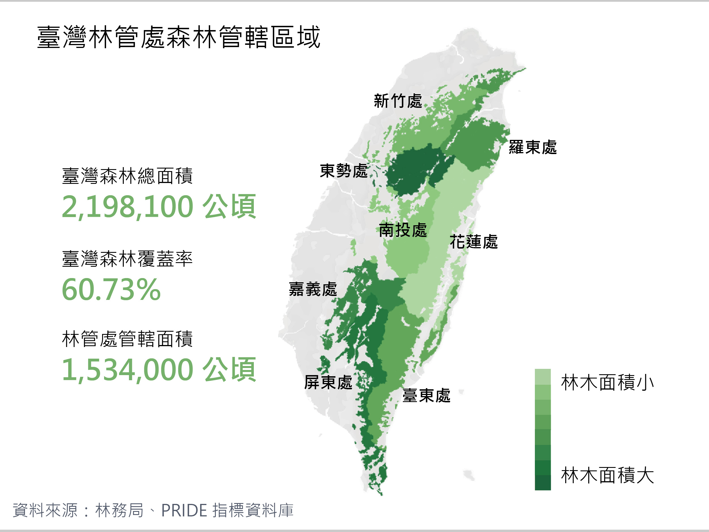
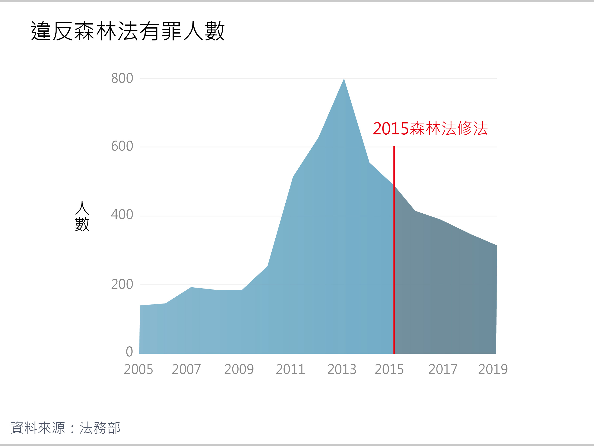
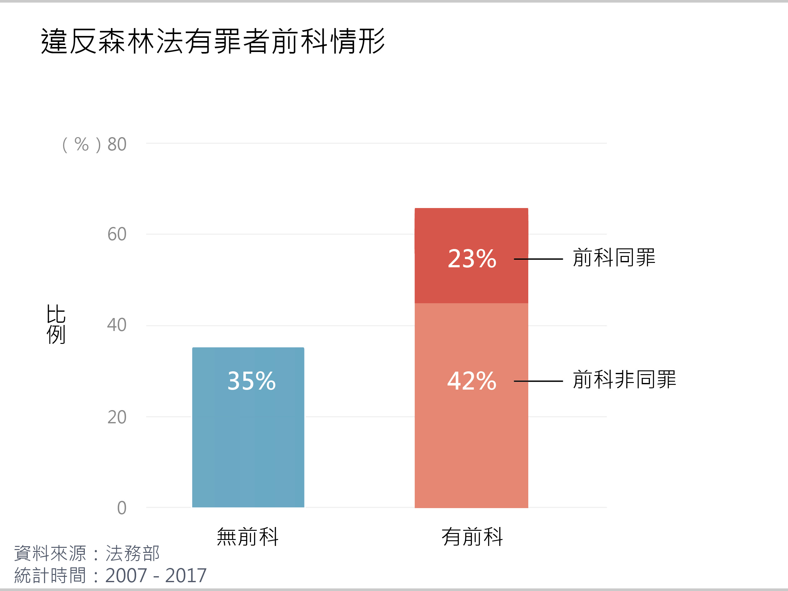
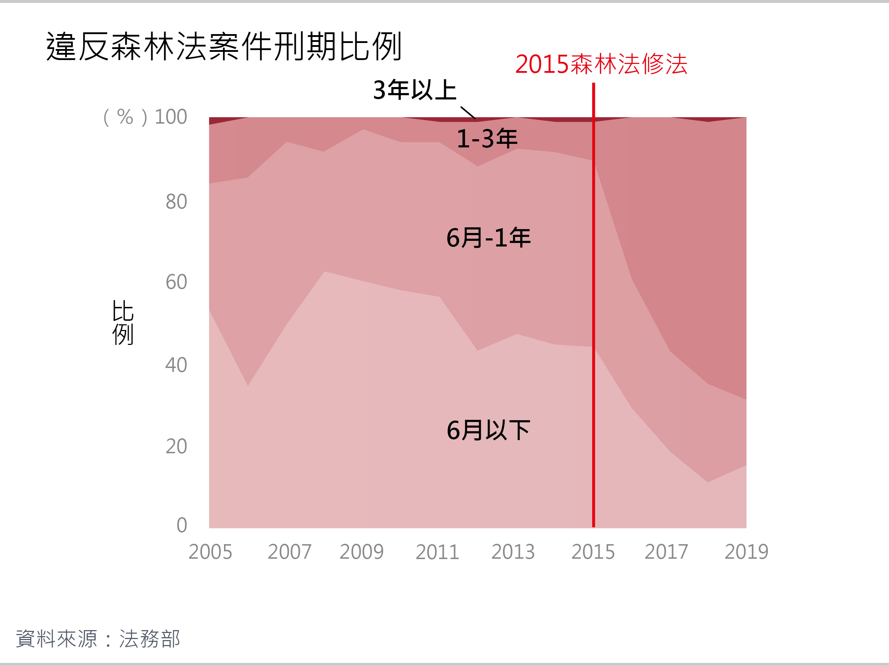

文字／孫嘉君、李獻儀
設計／戴淨妍
網頁工程／戴淨妍
臺灣森林面積廣大，許多珍稀林木棲息其中，但盜伐的發生，讓歷時數十、數百年生長的美麗森林毀於一旦。綜觀臺灣歷年盜伐案件，2010年起盜伐案件發生次數顯著上升，即使近年有漸緩趨勢，損失經濟價值仍持續攀升，背後原因值得探究。
惡名昭彰的山老鼠，是民間對盜伐者的代稱，近年來多採取一條龍集團犯罪模式，讓執法單位防不勝防。而俗稱巡山員的森林護管員，守在保衛山林的最前線，他們的工作狀況，也影響到能否順利完成任務。
本報導由歷年森林盜伐案件變遷、森林盜伐犯罪型態、森林盜伐與護管現況三面向，分析臺灣森林盜伐案件之變化與成因，並提出解決方案。
廣大的臺灣森林裡，隨著海拔梯度巨大的跨度，孕育著相當多樣化的自然環境。不僅僅有分佈於暖溫帶的針葉樹種，更有分佈於熱帶的闊葉樹種。而森林法所列出之12種受保護之珍貴樹種，其中10種就是臺灣特有的「針葉五木」及「闊葉五木」。這些樹種不只是在資本市場中擁有高經濟價值，它們更是在臺灣島嶼上背負著豐饒之生態價值、承載著人文生態史之文化價值，呈現臺灣森林的獨特性與多樣性。
四百多年來，漢人來到臺灣，墾殖、材薪與樟腦等需求，造成了低地森林的破壞，日治時代則開啟了大規模的伐木事業，往中海拔針闊葉混合林伐木。1945年國民政府來台後，推動「以農林培植工商業」的產業政策，開始大量砍伐原始森林，幾乎伐盡幾大林場的檜木林。
隨著1989年在民間的壓力下，林務局改制為「公務機構」，無需再自籌運作成本，加上1991年行政院通過禁伐自然林之政策，歷時約八十年的大伐木時代宣告終結，臺灣島嶼上的森林才擁有了喘息的空間。臺灣國有林事業區主管機關為林務局，目前共設立八個林務管理處（下稱林管處）。
臺灣林管處森林管轄區域，八個林管區林木面積大小不一
根據PRIDE政策指標資料庫中的2018年OECD資料，臺灣的森林覆蓋率為60.73%，位居51名，低於34名的日本，高於韓國、美國、中國等國。必須了解的是，臺灣森林並非都是原始林，因為在日治時期至戰後的大伐木時代，曾受過極大規模的破壞，現在臺灣部分森林是人工造林而成，顯見森林資源的運用與保護，是臺灣十分重要的課題。
觀察近二十年的森林盜伐案件發生次數，可以發現2009年以前，每年案件發生次數落在50至100餘次之間，到了2010年大幅增加（149次），並於2011年達到高峰（394次）。2015年《森林法》修法提高罰責後至今，盜伐發生次數逐漸趨緩，但平均每年發生200次，仍是高於2000年代一倍以上。
盜伐發生次數，森林法修法後逐漸趨緩
2010年起盜伐案件數，之所以呈現飆升現象，一直備受矚目。《臺灣林業》指出，遊客需求帶動產業鏈是一大原因。2008年，政府全面開放陸客來臺觀光，檜木製成的藝品例如聚寶盆，深受特定消費族群喜愛，讓市場價格節節高升。另一個原因，根據《豐年雜誌》報導，則是合法木材供不應求，盜伐者眼見有利可圖，以致計畫性的盜伐案件屢見不鮮。
對於被盜伐的林木，林務局每年會計算其被害價值，即於市場賣出的收益，計算方法有透過木材市價資訊系統查詢估價，以及向木製藝品店訪價進行估價 。
將盜伐發生次數與被害價值兩相對照，值得注意的是，雖然盜伐發生次數在近五年內漸趨平緩，被害價值卻持續上升。從2015年起，每年皆超過1億元，並於2019年達到最高峰的1.8億元。
盜伐被害價值，森林法修法後持續攀升
盜伐發生次數與被害價值變化趨勢的不同，實為2015年《森林法》修法所致。原先《森林法》第50條加重竊取森林主、副產物罪，判處6月以上5年以下有期徒刑，併科贓額二倍以上五倍以下罰金。在《森林法》修正法案生效後，該法第52條提高罰則至1年以上、7年以下有期徒刑，且須被科處贓額五倍以上、十倍以下的罰金。犯罪成本的提高，讓盜伐者因而傾向由經濟價值高的樹種下手。
臺灣木材市場中，同樣屬於森林法貴重樹種的牛樟、扁柏與紅檜，位居價格榜的前三名，也是盜伐者的首要目標。坊間流傳牛樟芝具抗癌保肝等療效，使盜伐者砍倒牛樟木、從中採集牛樟芝的事件時有所聞。而扁柏、紅檜生長於太平洋沿海的中海拔雲霧地帶，目前僅存於北美洲、日本、臺灣，常被用於製作工藝品。
全國木材平均價格，牛樟、扁柏、紅檜位居前三名
森林盜伐樣態分為生立木、樹頭殘材、副產物、漂流木等類型。樹頭殘材則多來自日治時期到1980年代，伐木後遺留未挖除之樹根，以紅檜、扁柏等為大宗。樹頭殘材因體積小，無須使用大型機具鋸切、搬運，是盜伐者的主要盜取標的。
近五年的遭盜伐生立木及樹頭殘材案件數中，樹頭殘材案件數均明顯多於生立木，而樹頭殘材案件數的變化趨勢，與圖三盜伐發生次數走勢相同，在2015、2017與2019年時較多，其餘年份則較低，顯示樹頭殘材為盜伐案件中最主要的盜伐樣態。
遭盜伐生立木及樹頭殘材案件數，樹頭殘材為主要盜伐樣態
2020年3月20日，桃園市大溪區，一個月黑風高的夜晚，小明（化名）與其他五人搭車到山上。
下車後，小明一行人再往深山徒步走了兩三天。
載他們的司機並不知道他們上山的目的。
到達現場，地上散佈已被不明人士切割成二十餘塊的扁柏，他們又花了兩三天，將扁柏塊用背架背下山，並藏在登山口附近。另外一名司機前來接應，阿明等人將扁柏搬上車後，再搭乘不同輛車離開。
木材運送過程中，被警方一舉查獲，盜伐事件才曝了光。
上述來自於某起盜伐案件的判決書內容。
近年盜伐案件多為「一條龍集團犯案」，採斷點式犯案，從木材辨識、鋸切、補給、搬運、載運、銷贓等皆分工執行，各組人員彼此之間常不認識且無聯繫，由犯罪集團的鼠頭統一調度人力，並且會指派另一組人員作為內應或監控。
收贓者則隱匿在幕後，與鼠頭交易，並將贓物轉賣至下游的藝品商、園藝商等。
這樣的集團犯罪模式，讓執法單位防不勝防，即使破獲犯罪事實，也無法一網打盡曾參與盜伐過程的所有關係者。而原先山老鼠多為使用重機具，於深夜時砍伐整株樹木。在政府依法嚴加查緝後，轉為用鏈鋸、線鋸等器具，把樹木砍為一塊塊，運用形同「螞蟻搬家」的手法，將樹材分批搬運下山。
觀察違反森林法有罪人數，走勢與盜伐發生次數大致相同。2005年至2009年間，每年平均為100餘人。到了2010年，開始升高至253人，在2013年達到巔峰的797人。隨後人數逐漸減少，在2015年森林法修法後，降至300、400人之間。

違反森林法有罪人數，修法後持續下降
同時，違反《森林法》有罪者，無前科者為35%，有前科的比例過半（65%），其中前科同罪者佔兩成（23%），顯示違反森林法者多為具有前科者，並有一定比例會重複再犯，這也是促成《森林法》修法加重刑期的原因之一。
違反森林法有罪者前科情形，六成以上犯罪者有前科
由下圖違反《森林法》案件刑期比例圖，可以發現2005年至2015年共11年間，刑期1年以下的比例佔八成以上（82%-96%），1至3年以上者僅佔約一成（6%-16%）。2015年後，《森林法》第52條提高刑期至1年以上、7年以下，導致刑期1至3年的比例大幅提高，至2019年已達68.37%，其餘則是違反森林法其他法條者。不過遭判處3年以上者，仍屬極少數。
違反森林法案件刑期比例，修法後遭判刑期提高，但三年以上仍少
前文提及到，臺灣國有林事業區目前共由八個林管處管轄。透過林務局開放資料繪製而成的盜伐熱區圖，顯示臺灣森林盜伐案件，主要常發生於四個林管處的轄區：新竹、東勢、嘉義、屏東林管處。
在各個林管區中，俗稱巡山員的護管員，以及林業技術士，是防範盜伐的第一線人員。根據林務局林政組所提供資料，目前全台執行護管工作者共有1059名，一名護管工作者平均管理面積為將近1450公頃，相當於55個大安森林公園的面積。
林務局亦有統計各林管區中，因盜伐消失的林木材積，以及損失價值。新竹林管區盜伐平均損失價值為四個林管區最低，但該區的平均消失林木材積最高，然而，該區亦有諸多高經濟價值的牛樟盜伐熱點，此現象原因尚待探究。
而東勢林管區的因盜伐平均消失林木材積為四個林管區最小，年平均損失價值卻是最高，可能原因是該區為牛樟、紅檜等高經濟價值樹種的盜伐熱區。
由林務局開放資料繪製而成的貴重樹木生立木盜伐熱區圖，以及貴重樹木樹頭殘材盜伐熱區圖，可以發現即便是同樣樹種，不同的盜伐樣態的熱點數與區域分佈不盡相同。
牛樟的生立木熱點較少，多集中於北部的東勢林管處，而樹頭殘材熱點數顯著較多，中南部、北部、東部皆有熱點分佈。扁柏的生立木盜伐熱點同樣較少，集中於南部的屏東林管區，樹頭殘材熱點則是廣泛分佈於中北部。
森林盜伐發生次數在近五年內漸趨平緩，被害價值卻持續上升，因為2015年森林法修法加重罰則，提高犯罪成本，盜伐者因此傾向盜取經濟價值高的樹種。其次，修法也讓違反森林法的受刑人遭判刑期，由1年以下轉變為1至3年為主。然而在現行法規可判處1年至7年有期徒刑的情況下，遭判3年刑期以上者，仍屬極少數。此外，單一林管區的盜伐損失價值、消失森林面積、熱點分佈等層面亦有交互影響，例如東勢林管區年平均損失價值高，應與較多高經濟價值樹種分佈有關。
若要從根本改善盜伐問題，必須從政策與制度面著手。由於環保意識抬頭，1992年起政府宣布全面禁伐原始林、限伐人工林，這樣的措施持續將近30年，導致臺灣當前合法木材自給率不足，整體林業發展停滯，無法滿足合法木材交易市場上的需求。除了造成國內非法木材流入市場持續擴增，臺灣也因此而過度依賴進口木材，間接使臺灣成為國外盜伐木材的幫兇，非法地下化的木材交易管道不斷肆虐。
因此，木材合法認證、國產材推動與國內自主森林林地驗證，以促進國內合法林業的永續產業鏈，在遏制盜伐犯罪的政策上極其重要(11)。木材合法認證可讓林產品來源能被追朔，以確保林產品加工產業使用合法的原木來源，民眾才可避免購得「血木頭」之非法林產品，阻斷非法木材的供應。木材認證的把關，也可讓臺灣製之林產品符合國際貿易標準而出口至世界各地，擴展臺灣的市場至全球化產業。
若要補足國內木材市場需求，可砍伐樹種單一、生物多樣性較低的人工林作為替代，方能降低盜伐木材流入市場的可能性。國內林業的永續發展與國產材的推動，須推翻「砍伐樹木就是破壞環境」的刻板印象。因為推動使用生態友善、能減緩氣候變遷日趨嚴重的林產品，不只是為了提高國內木材自給率以填補市場空缺，也符合世界的林業永續發展趨勢。
在這氣候變遷問題惡劣的時代，永續經營森林政策變得極為重要，這是因為林木擁有「碳儲存」的功能。進行光合作用的林木，會將大氣中的二氧化碳轉化成有機碳，儲存於林木體內，而林木生物量每增加1公噸，就會使用1.6公噸的二氧化碳。森林收穫後，便會將碳固定於林產品中。林產品不僅僅可延緩碳的釋放，若將林產品取代製造過程中消耗更多能量的產品（如：金屬、塑料等），也能節省能量的消耗，減緩溫室氣體的排放，有助於環境的保護。